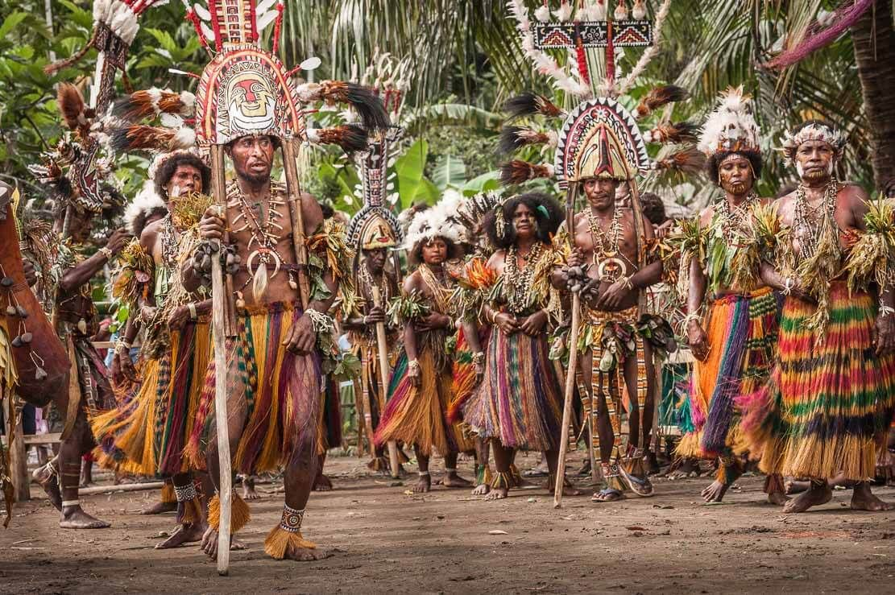
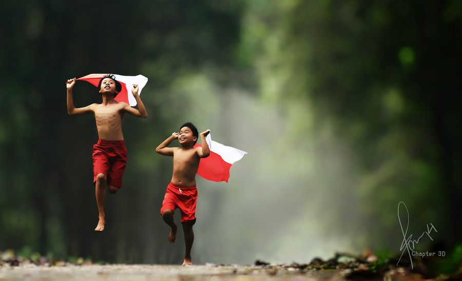

Daftar Isi
Makna Sumpah Pemuda di Era Digital
Sumpah Pemuda adalah salah satu tonggak sejarah Indonesia yang sakral, tanpa ikrar para pemuda ini, semangat kemerdekaan di masyarakat mungkin akan muncul lebih lama. Jika melihat kondisi saat ini, banyak pemuda-pemudi Indonesia yang kurang memahami pentingnya makna Sumpah Pemuda.
Hal ini tercermin dari kehidupan sehari-hari generasi muda sekarang yang–bisa dibilang–cenderung individualis dan tidak memiliki pondasi yang kuat. Untuk mengatasinya diperlukan langkah panjang, namun memahami makna Sumpah Pemuda yang paling utama adalah bisa menjadi awal yang baik.
Satu Tanah Air
Paragraf pertama dalam Sumpah Pemuda menyatakan bahwa pemuda Indonesia hanya memiliki satu tanah air, yaitu Indonesia. Apapun asal daerahnya, kita sama-sama menghirup udara, tumbuh, serta berkembang di negara Indonesia. Di negara ini, kita pertama kali mengeluarkan tangis ketika lahir dulu dan di sini juga kita akan menghabiskan seluruh waktu sampai meninggal nanti.
Dulu, sebelum sumpah pemuda dibacakan, bangsa Indonesia hanya bangga dengan keunggulan daerahnya sendiri. Mereka mempertahankan daerahnya dari penjajah sendiri-sendiri. Oleh karena itu, pasukan Belanda bisa menguasai Indonesia dengan cepat.
Setelah sumpah pemuda dibacakan, kesadaran akan tanah air yang satu mulai muncul. Semangat kesatuan bergejolak dan para pejuang bertempur membela seluruh daerah yang ada di tanah air, tanpa diskriminasi sama sekali.
Inilah yang harus kita jaga saat ini. Semangat kesatuan tanpa memandang daerah mana yang lebih baik dan lebih buruk sebab dari Indonesia itu luas. 17.000 pulau yang membentang dari Sabang sampai Merauke adalah tanah air yang harus kita pertahankan semaksimal mungkin.
Semangat ini dapat mewujudkan rasa cinta tanah air yang kuat, tulus, dan otentik. Jika kita tidak mencintai tanah air Indonesia, siapa lagi? Apa kamu mau kebudayaan, sejarah, wilayah, dan semua yang ada di negara ini diakui oleh bangsa lain?
Satu Bangsa Indonesia
Menjelang Kongres Pemuda II dimulai, para pemuda yang hadir menginap di asrama serta menyewa rumah-rumah yang jaraknya dekat dengan gedung tempat Kongres digelar. Di tempat ini, mereka berkumpul dan melakukan berbagai aktivitas bersama-sama.
Setelah itu, para pemuda yang datang menggunakan nama “pemuda nasional” sebagai identitasnya. Bukan pemuda Sunda, pemuda Jawa, atau yang lainnya. Mereka menggambarkan persatuan berbagai suku di Indonesia, sesuai dengan semboyan negara ini “Bhinneka Tunggal Ika”.
Perbedaan suku serta adat istiadatnya jangan dipandang sebagai sebuah kekurangan, sebab hanya akan membawa bangsa ini ke dalam perpecahan. Sebaliknya, keragaman ini justru merupakan keunggulan yang harus kita banggakan. Kita telah berhasil menyatukan ratusan suku bangsa di dalam satu bangsa, yaitu bangsa Indonesia.
Satu Bahasa Indonesia
Salah satu hasil yang paling menonjol dari ikrar Sumpah Pemuda adalah penggunaan bahasa Indonesia sebagai bahasa persatuan. Para pemuda yang hadir saat itu menyadari bahwa bangsa Indonesia akan sulit untuk bersatu jika masih ada hambatan dalam berkomunikasi.
Ya coba kamu bayangkan, bagaimana mungkin para pejuang bisa merumuskan strategi untuk melawan penjajah jika terkendala perbedaan bahasa? Tidak ada waktu untuk mempelajari semua bahasa daerah yang digunakan saat itu. Jalan keluar yang paling tepat adalah dengan menggunakan satu bahasa yang sama untuk berkomunikasi.
Bahkan Moh. Yamin yang bertugas menjadi sekretaris saat Kongres Pemuda II harus menerjemahkan pembicara yang menggunakan Bahasa Belanda. Jika bahasa Indonesia tidak ditetapkan menjadi bahasa persatuan, mungkin artikel ini harus diterjemahkan ke dalam ratusan bahasa daerah agar bisa dimengerti semua pembaca.
Memaknai Sumpah Pemuda di era Digital
Tiga makna sumpah pemuda di atas merupakan pondasi dasar yang harus kita pelihara sampai kapanpun. Sementara itu, penerapan nilai-nilai dan cara kita memaknai sumpah pemuda juga harus selalu disesuaikan dengan zaman. Tentu saja dengan tetap menggunakan pondasi dasar yang ada.
Dengan begitu, nilai dan semangat Sumpah Pemuda dapat kita wariskan kepada anak-cucu kita nanti. Di era digital ini, ada beberapa cara yang bisa kita lakukan untuk memaknai Sumpah Pemuda. Berikut penjelasannya:
1. Memanfaatkan teknologi untuk menghasilkan karya yang inovatif
Perkembangan teknologi yang semakin pesat saat ini membuka banyak kesempatan bagi generasi muda yang ingin berkontribusi pada tanah air. Pandemi Covid-19 ikut berperan dalam mendorong rasa persatuan dan kebersamaan.
Generasi muda, dalam dua tahun ini, tak pernah berhenti bergotong-royong membantu sesama yang terkena dampak pandemi. Baik dari sisi ekonomi, tempat tinggal, maupun yang lainnya.
Berbagai inovasi teknologi diciptakan untuk menjembatani para pemuda dan seluruh masyarakat Indonesia. Website, aplikasi, media digital, platform belajar, jasa pesan antar, hingga marketplace merupakan bukti bahwa generasi muda mampu memanfaatkan teknologi untuk menghasilkan karya yang inovatif.
Secara tidak langsung, mereka telah mengamalkan semangat menjaga persatuan dan kesatuan bangsa Indonesia. Sesuatu yang telah diwariskan oleh generasi muda hampir satu abad yang lalu.
2. Mengelola informasi dengan bijak dan melawan hoax
Seiring dengan meluasnya internet, keran informasi seperti dibuka lebar. Saat ini semua orang bisa mendapatkan informasi yang diperlukan dengan mudah. Sayangnya, kehadiran hoax menjadi hantu yang meneror kehidupan masyarakat.
Anak-anak, remaja, dewasa, dan orang tua dapat termakan oleh berita bohong yang mereka temukan di internet. Di sinilah tugas generasi muda yang lebih akrab dengan teknologi dibutuhkan.
Generasi muda harus menjadi benteng pertahanan sekaligus tombak utama dalam memerangi hoax. Karenanya sikap kritis kepada diri sendiri dan lingkungan sekitar adalah hal yang mutlak. Kita harus berperan aktif mengajarkan orang tua dan adik-adik tentang hoax.
Setidaknya, tumbuhkan kesadaran tentang kebebasan informasi dan sikap kritis pada mereka. Berikan contoh bagaimana cara mengelola informasi yang didapatkan. Bila perlu, ajarkan cara memanfaatkannya sebagai peluang memperbaiki kualitas hidup.
3. Menghargai dan menghormati orang lain
Indonesia sempat mengalami krisis toleransi selama beberapa tahun. Diskriminasi dan Polarisasi di masyarakat menguat hingga titik yang mengkhawatirkan. Saat ini perlahan-lahan Indonesia mulai kembali menjadi negara yang menjunjung tinggi budaya saling menghargai dan menghormati.
Sebagai generasi muda, kita harus menjaga budaya ini sekuat mungkin agar tidak ada lagi krisis toleransi di masa depan. Para pendahulu kita telah membuktikan bahwa dengan bersatu, bangsa Indonesia berhasil mengusir penjajah. Lantas apa yang membuat kita harus tercerai berai lagi?
Perbedaan agama, pemikiran, suku, budaya, tradisi, pemikiran, dan yang lainnya tidak seharusnya dipandang sebagai kelemahan yang bisa dieksploitasi. Sebaliknya, perbedaan tersebut justru merupakan kepingan puzzle yang jika disatukan akan menjadi Indonesia yang kuat.
Dengan menghargai dan menghormati orang lain, kita telah mengamalkan semangat persatuan yang sama dengan generasi muda terdahulu.
4. Memakai produk dalam negeri
Di era internet seperti sekarang, pemasaran produk berjalan dengan sangat cepat. Banyak perusahaan besar yang menganggap Indonesia sebagai pasar potensial yang harus diprioritaskan. Makanya, beberapa dari mereka kerap menghadirkan produk terbaru di Indonesia.
Di saat yang sama, produk-produk dalam negeri ikut muncul ke permukaan dengan bantuan digital marketing. Persaingan untuk merebut perhatian konsumen semakin ketat, perusahaan sebagai produsen tidak bisa hanya mengandalkan satu strategi pemasaran saja.
Sayangnya, tak sedikit pemuda yang menganggap produk dalam negeri tidak memiliki kualitas yang baik dibanding produk luar negeri. Akibatnya, produk-produk buatan bangsa Indonesia kerap dipandang sebelah mata. Padahal kenyataannya sudah banyak produk dalam negeri yang kualitasnya tidak kalah, bahkan lebih bagus, dari produk luar.
Tugas kita di sini adalah meningkatkan rasa cinta pada hasil keringat saudara-saudara kita. Caranya dengan lebih menghargai dan tidak memandang sebelah mata produk dalam negeri.
Dengan begitu, kita telah membantu menopang perekonomian masyarakat dan mengapresiasi hasil karya bangsa Indonesia.
5. Memelihara bahasa Indonesia dan bahasa daerah
Bahasa Indonesia merupakan warisan leluhur yang harus kita pelihara. Salah satu caranya dengan menggunakan bahasa Indonesia yang baik dan benar untuk berkomunikasi. Di samping itu, bahasa daerah harus kita lestarikan.
Memang benar, saat ini kita dituntut untuk menguasai bahasa asing agar bisa mendapatkan informasi serta meningkatkan kualitas diri. Namun bahasa Indonesia dan bahasa daerah tidak boleh dilupakan begitu saja. Biar bagaimanapun, keduanya adalah jati diri bangsa Indonesia.
Sebagian orang merasa lebih mudah mengekspresikan diri dengan bahasa asing, sebagian lagi merasa bahasa Indonesia tidak terlalu penting untuk dipelajari karena sering digunakan di kehidupan sehari-hari. Namun faktanya, masih banyak orang yang tidak tahu cara menggunakan bahasa Indonesia yang baik dan benar. Begitu pula dengan bahasa daerah.
Kondisi memprihatinkan ini tidak akan berubah jika kita tidak mulai mempelajari bahasa Indonesia dan bahasa daerah dengan serius. Ingat, bahasa Indonesia membuat kita bisa berteman dengan lebih banyak orang, tanpa perlu mempelajari semua bahasa daerah.
Ivan Lanin melalui bukunya Xenoglosofilia: Kenapa Harus Nginggris? menyoroti hal ini dan mencoba menyadarkan pembacanya bahwa menggunakan bahasa Indonesia yang baik bukan hal yang sulit.
6. Bijak menggunakan media sosial
Media sosial sudah tidak bisa dipisahkan dari kehidupan masyarakat Indonesia. Seperti produk teknologi yang lain, ada sisi positif dan negatif dari media sosial–tergantung bagaimana kita memanfaatkannya.
Sisi positifnya, media sosial bisa menjadi tempat mempelajari ilmu pengetahuan baru yang tidak diajarkan di sekolah. Terutama yang berhubungan dengan dunia digital. Konten kreator dan perusahaan berlomba-lomba menghadirkan konten yang edukatif sekaligus bermanfaat kepada audience mereka.
Sisi negatifnya, media sosial juga bisa menjadi media untuk menyebarkan hoax, hate speech, bahkan penipuan. Seringkali pelaku kejahatan di media sosial menyaru sedemikian rupa sehingga sulit dilacak. Setelah ada korban, baru jati diri aslinya terungkap.
Melihat kondisi seperti ini, generasi muda harus berperan aktif dalam menyebarkan pesan-pesan positif serta mengedukasi masyarakat terkait penggunaan media sosial yang baik dan benar. Ini adalah bagian dari usaha menjaga tanah air Indonesia dan kesatuan bangsa.
7. Melestarikan budaya asli Indonesia
Ada yang bilang, masa muda merupakan saat yang tepat untuk mencoba banyak hal dan mengeksplorasi kemampuan diri. Hanya dengan bermodalkan rasa ingin tahu yang tinggi, seseorang bisa mempelajari satu bidang hingga mahir.
Semangat menggebu ini bisa kita salurkan untuk mempelajari budaya asli Indonesia dan melestarikannya. Kenyataannya, budaya Indonesia tidak begitu kaku dan bisa menyatu dengan kemajuan teknologi.
Tengok saja lagu Lathi milik Weird Genius yang viral tahun 2020 lalu. Reza “Arap” Oktovian, Eka Gustiwarna, dan Gerald Liu berhasil memadukan kebudayaan tradisional dengan musik modern untuk menghasilkan karya yang autentik sekaligus unik.
Perilaku yang Tidak Sesuai dengan Semangat Sumpah Pemuda
Untuk menjaga persatuan dan kesatuan bangsa Indonesia, generasi muda seperti kita harus menghindari perilaku-perilaku yang tidak sesuai dengan semangat Sumpah Pemuda. Berikut ini adalah beberapa contoh perilaku tersebut:
1. Individualis atau mementingkan diri sendiri
Individualisme merupakan perilaku yang bisa merugikan banyak orang. Sebab orang yang mementingkan diri sendiri seringkali tidak peduli pada orang-orang di sekitarnya. Bahkan bisa saja dia tidak peduli pada kepentingan kelompok sama sekali. Yang ada di pikirannya hanya cara mendapatkan keuntungan bagi dirinya sendiri.
Sebagai contoh, ketika kamu terpilih sebagai anggota tim voli yang akan bertanding di Pekan Olahraga Antar Kelas, kamu mempunyai tanggung jawab untuk memberikan yang terbaik agar bisa menjadi juara. Namun, pada saat latihan, kamu justru lebih memilih pergi bermain bersama teman. Perbuatan seperti ini bisa merugikan teman-temanmu yang lain.
2. Berbuat semaunya
Sifat seperti ini dapat memicu sikap acuh tak acuh dan tidak mau peduli dengan urusan orang lain. Tak jarang, sikap ini juga membahayakan orang lain dan dirinya sendiri. Misalnya di sekolah, kamu akan dijauhi oleh teman-teman sekelas. Atau di lingkungan tempat tinggal, kamu bisa saja dikucilkan oleh tetangga dari pergaulan karena dianggap tidak dapat menghargai orang lain.
Pada akhirnya, ketika kamu memerlukan bantuan orang lain, tidak ada yang mengulurkan tangan padamu. Padahal, manusia pada dasarnya merupakan makhluk sosial yang memerlukan kehadiran manusia lain dalam hidupnya.
Jika kamu ingin mengetahui bagaimana kehebatan orang-orang Indonesia, coba baca buku Ensiklopedi Suku Bangsa di Indonesia yang ditulis oleh Dr. Zulyani Hidayah. Buku ini menyajikan informasi pokok mengenai berbagai suku bangsa di Indonesia, yang beberapa di antaranya sudah diteliti dan diungkap, namun jauh lebih banyak yang belum teridentifikasi secara baik.
3. Sombong
Orang yang sombong cenderung merasa lebih hebat dari orang lain. Sifat seperti ini hanya akan merusak kesatuan dan kesatuan dalam kelompok masyarakat. Ketika seseorang menganggap dirinya sangat hebat, dia akan merendahkan orang lain.
Setiap orang mempunyai harkat dan martabat yang sama sejak lahir sehingga tidak ada yang lebih tinggi atau lebih rendah. Sebagai makhluk yang sama, sudah sepatutnya kita saling menghormati. Lagipula orang yang sombong lebih sulit mendapatkan teman.
4. Fanatisme agama yang berlebihan
Undang-Undang Dasar Negara Indonesia telah menjamin kebebasan setiap warga negara untuk memeluk agama yang diyakininya. Sehingga siapa saja memiliki hak untuk menjalankan ibadah sesuai agamanya.
Fanatisme agama yang berlebihan akan menimbulkan konflik beragama di masyarakat. Sebab sifat ini akan membuat kamu tidak terbuka pada perbedaan dalam beragama, meskipun masih dalam satu agama yang sama.
Bukankah Tuhan menciptakan manusia dengan akal dan pikiran agar bisa saling memahami? Apalagi setiap agama pada dasarnya mengajarkan kerukunan dan memerintahkan pemeluknya untuk menjauhi kejahatan. Sedikit perbedaan tidak lantas menjadikan satu agama lebih baik daripada yang lainnya.
Itulah ulasan mengenai Media Sosial Sebagai Wadah Kreatifitas Dalam Membangkitkan Jiwa Sumpah Pemuda bagi generasi saat ini di era digital.